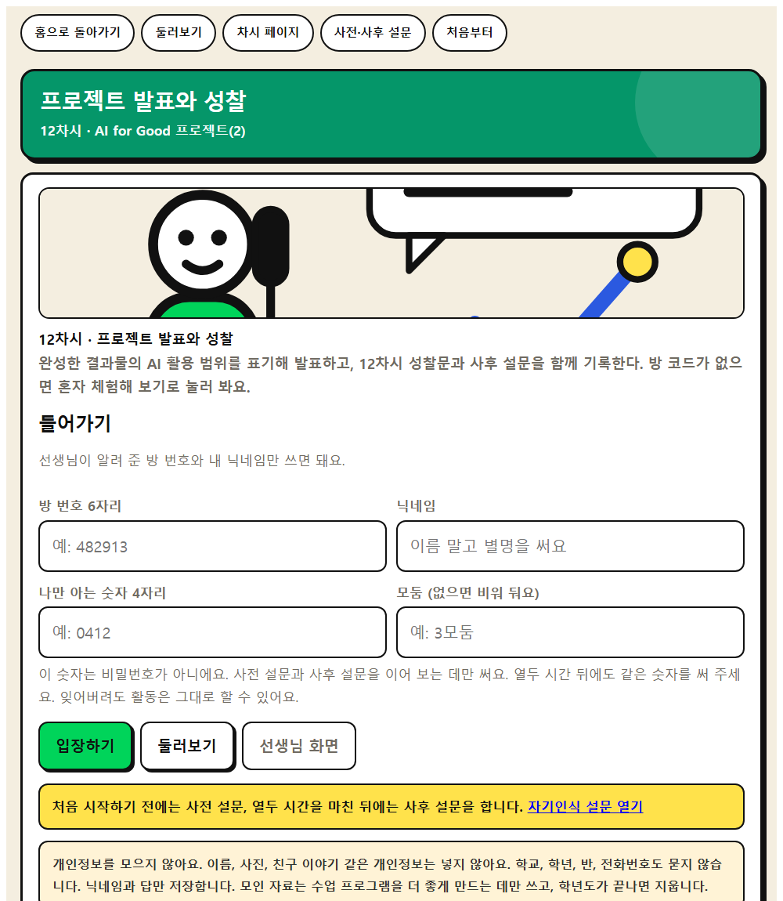
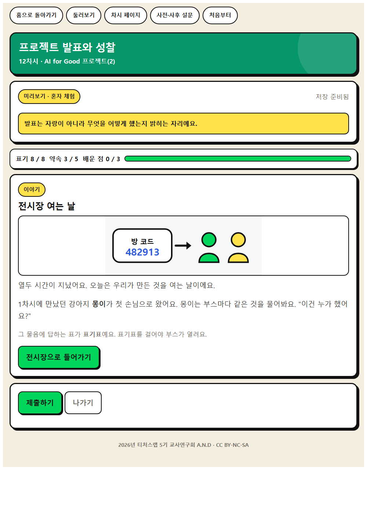
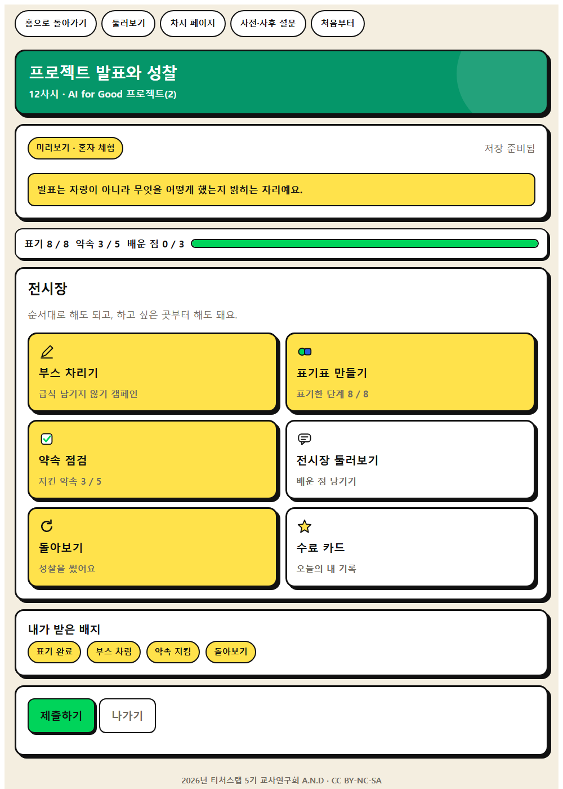
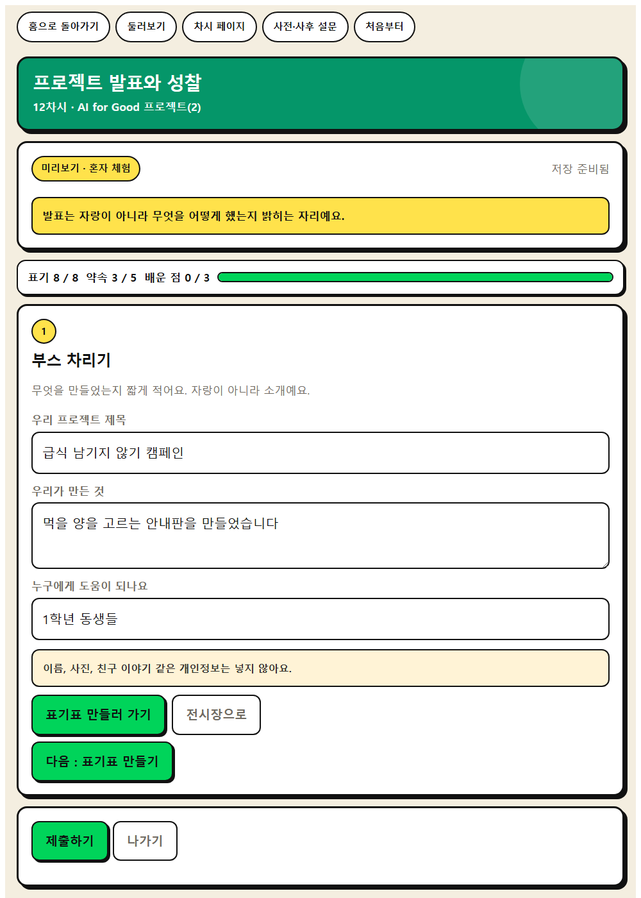
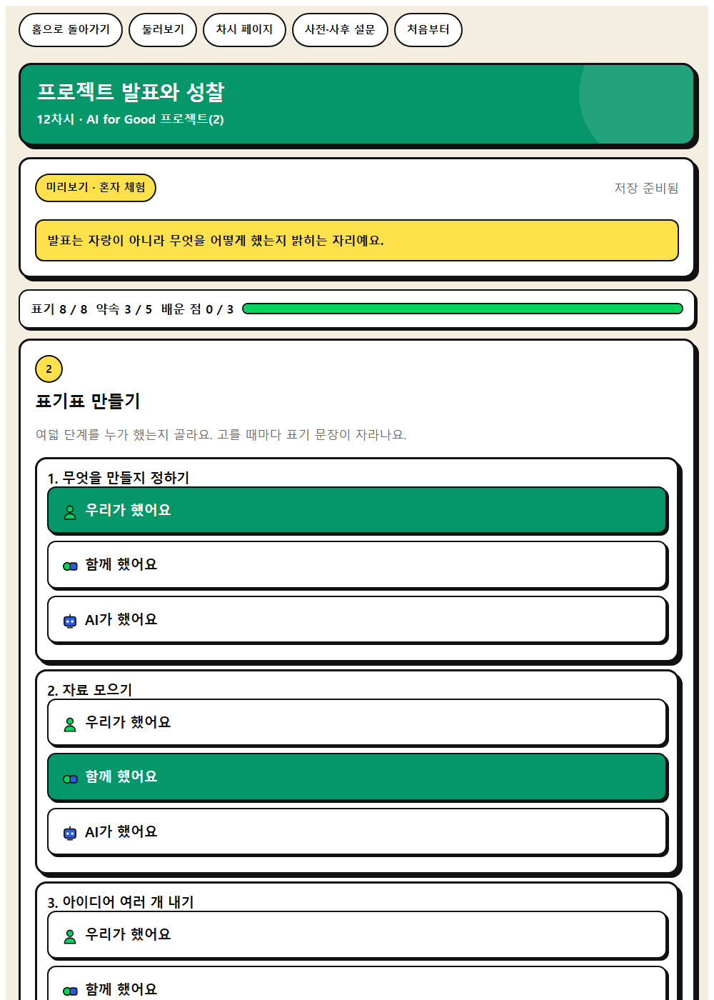
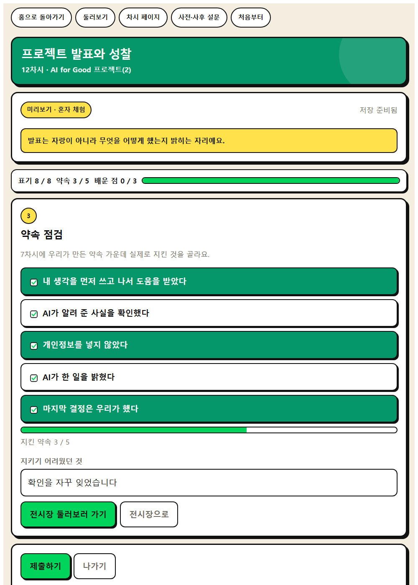
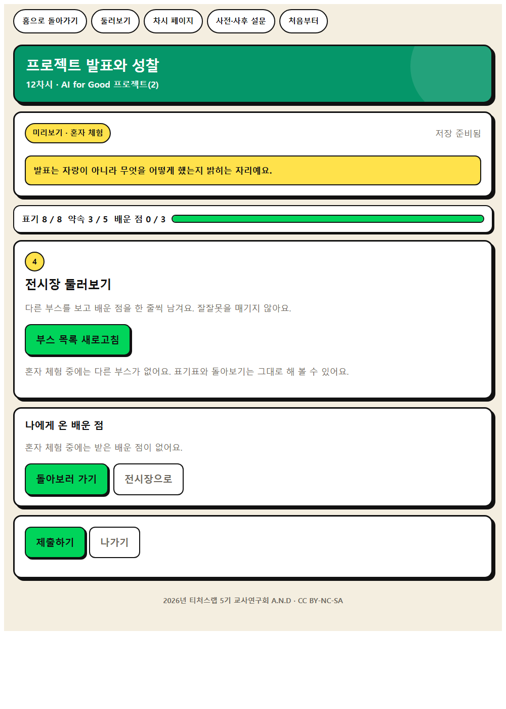
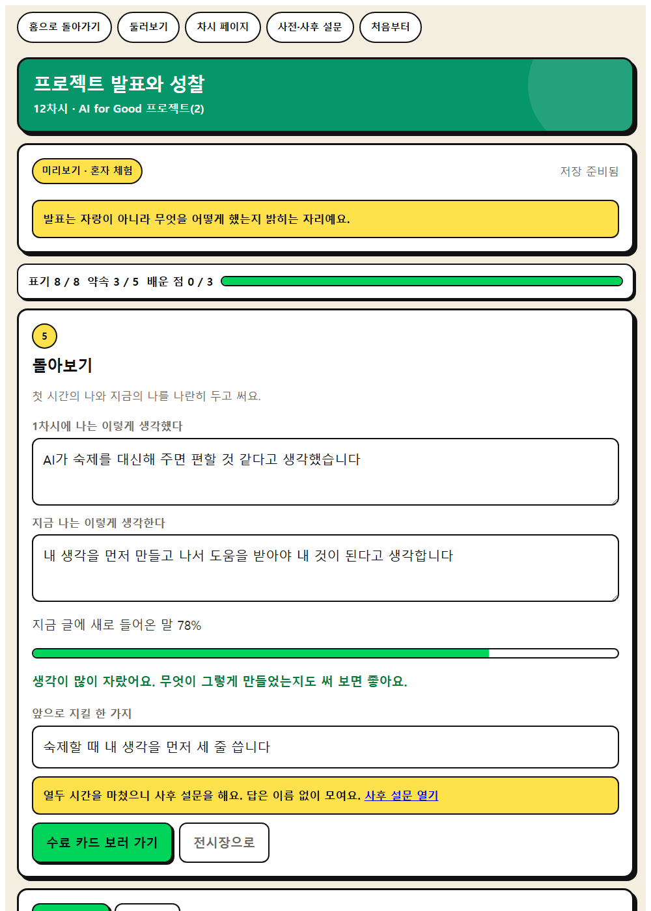

WISE 실천 · 12차시
프로젝트 발표와 성찰
완성한 결과물의 AI 활용 범위를 표기해 발표하고, 12차시 성찰문과 사후 설문을 함께 기록한다.
이 앱으로 무엇을 하나
해결 결과물을 만들어 발표하고 12차시를 돌아봅시다.
사회·관계적 사고성찰적 사고주체성
배우는 것
- 사회·관계적 사고 · 사람과 AI의 역할을 나누어 결과물을 제작하고 발표하기
- 성찰적 사고 · 12차시 동안의 변화를 점검하고 다음 계획을 세우기
- AI적정활용 구성요소 · ② 학습자 주체성
- AI적정활용 구성요소 · ⑤ 비판적 AI 리터러시와 검증 가능성
체험하는 법 (세 걸음)
- 혼자 먼저 해 본다. 앱을 열고 닉네임만 넣은 뒤 둘러보기를 누른다. 저장되지 않으니 마음껏 눌러 본다. 웹앱 열기
- 수업 직전에 방을 만든다. 앱에서 선생님 화면을 누르고 비밀번호 네 자리를 정한 뒤 새 방 만들기를 누른다. 여섯 자리 방 번호가 나온다. 칠판에 적는다.
- 학생이 들어온다. 같은 주소를 열어 방 번호와 닉네임, 나만 아는 숫자 네 자리를 넣는다. 제출하면 선생님 화면에 바로 모인다.
기기가 모자라면 모둠에 한 대로 함께 하고, 없으면 발표가 어려운 학생은 모둠 대표 설명으로 대체하고, 성찰문은 종이로 제출한다.
화면 미리 보기
실제 앱 화면입니다. 눌러서 크게 볼 수 있습니다.








수업 흐름과 발문
도입 · 5분
동기 유발
동기 유발
- 지난 시간에 세운 계획을 다시 확인해 봅시다. 무엇부터 하면 될까요?
도입 · 5분
학습 문제 확인
학습 문제 확인
- 해결 결과물을 만들어 발표하고 12차시를 돌아봅시다.
전개 · 30분
[활동 1] 결과물 완성하기
[활동 1] 결과물 완성하기
- 계획한 순서대로 결과물을 완성해 봅시다.
전개 · 30분
[활동 2] 발표하고 활용 과정 설명하기
[활동 2] 발표하고 활용 과정 설명하기
- 결과물과 함께 AI를 어디에 어느 정도 썼는지 설명해 봅시다.
- 우리 반 약속 중 어떤 조항을 지켰나요?
전개 · 30분
[활동 3] 12차시 돌아보기
[활동 3] 12차시 돌아보기
- 첫 시간과 지금, AI에 대한 내 생각은 어떻게 달라졌나요?
- 사후 설문에 솔직하게 답해 봅시다.
정리 · 5분
배움 정리
배움 정리
- 12차시를 한 문장으로 정리해 봅시다.
정리 · 5분
실천 다짐
실천 다짐
- 우리 반 AI 약속을 학기 끝까지 어떻게 점검할까요?
함께 보면 좋은 자료
- 자료 초등 자기평가, 정의적 능력 평가 도구 예시 자료 경기도교육청
5·6학년 사회과 발표 자기평가 문항을 가져와 발표 뒤 생각이 어떻게 달라졌는지 적는 성찰지로 쓴다.
- 자료 초등 학습으로의 평가 이해하기 경기도교육청
과정을 중시하는 평가 항목을 읽고 발표 결과가 아니라 프로젝트 전 과정을 보는 기준과 피드백 문구를 미리 만든다.
- 자료 EBS 소프트웨어·인공지능 교육 (이솦)
초등용 AI 학습 콘텐츠와 수업 영상을 무료로 받을 수 있다.
- 영상 EBS AI 단추
학년별 AI 개념 영상. 도입 자료로 한두 편 골라 쓴다.
- 영상 EBS Learning 유튜브 채널
채널 안에서 차시 주제로 검색해 최신 영상을 고른다.
- 뉴스 대한민국 정책브리핑
AI 정책과 학교 현장 기사. 사실 확인이 된 자료를 인용한다.